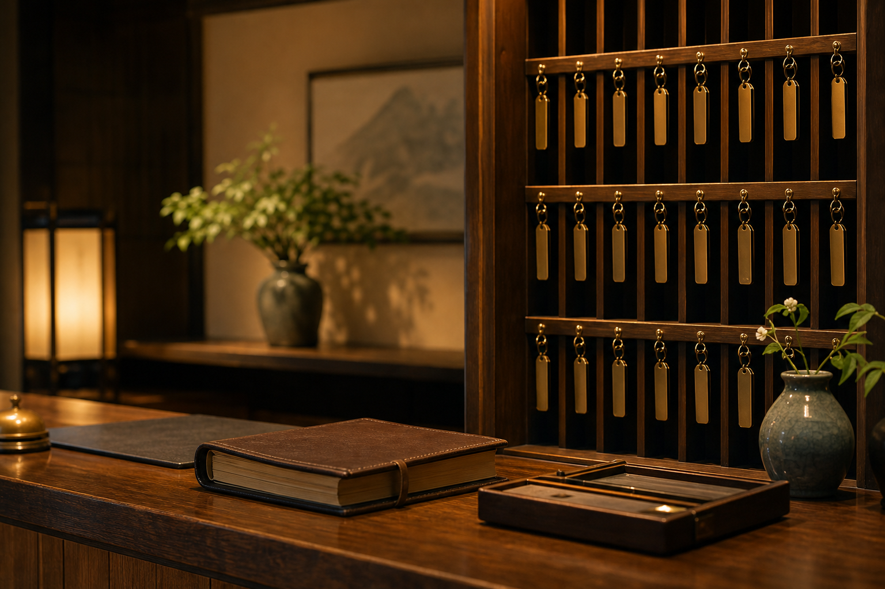

帳場でお預かり
外出時は鍵を帳場へお預けください。
帳場控え
客室鍵、離れ客室の鍵札、宿帳の照会方法をご案内します。

外出時は鍵を帳場へお預けください。
宿帳照会には宿泊日、代表者名、客室名が必要です。
離れ客室の鍵受け渡し時刻を修正済みです。
当館では、客室鍵の受け渡しを宿帳控えと鍵札棚で二重に確認しています。
外出時は客室名を確認し、鍵札棚の該当位置へ戻します。
宿泊代表者名、客室名、帰着時刻を照合してお渡しします。
離れ客室は通常鍵と木札を組み合わせて管理しています。
訂正がある場合は、訂正者名と時刻を残します。
帳場の棚
鍵札棚には客室順ではなく、当日の出入りに合わせた控えが残ります。深夜の訂正は朱書きで追記し、翌朝の宿帳確認票と合わせて保管します。
記録の確認は、個人情報と館内安全の都合上、必要箇所のみご案内しています。
代表者名だけでは照会できません。客室名、利用日、人数を確認します。
返却欄、外出欄、訂正欄を順に確認します。
手書き控えと電子控えの時刻が違う場合は、朱書き控えを優先します。
他のお客様の情報を含む箇所は伏せて案内します。
返却欄に追記がある場合は、翌朝の帳場確認票もあわせて確認します。